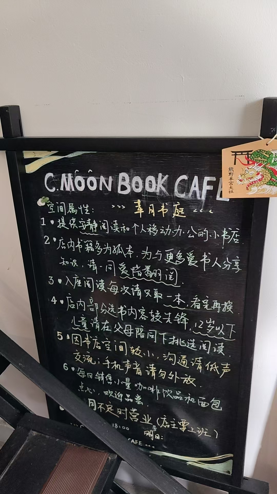
小蓉
萃月书庭主理人 / 手工咖啡爱好者 / 拳击练习者
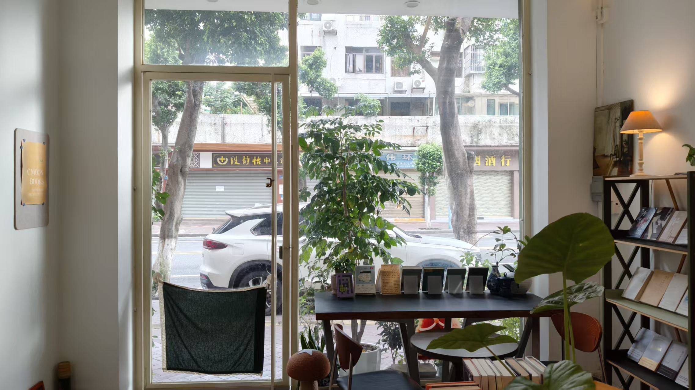
招牌上的字没有刻意放大，菜单是手写的，价格牌被放进相框里。店里没有铺满教辅资料，也没有急着告诉你"这里有什么特别"。书架、咖啡、窗户和一只偶尔打断谈话的猫，共同构成了它的秩序。
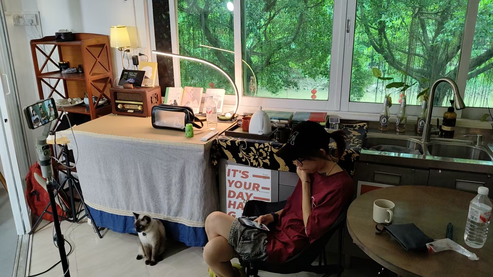
这间店的主人小蓉说，她最初并没有一个完整的商业计划。
她只是从很小的时候起，就喜欢逛书店。那时没有那么多电子设备，放学后和朋友一起钻进书店，看纸书，聊小说。长大以后，工作和生活把人推向越来越快的轨道，但那个关于书店的想象一直没有消失。
"等基本的事情完成了，我们可以找一个地方，把自己的东西寄托在这里。"
后来，机会真的出现了。她没有先计算这间店能带来多少财富，而是先把想做的事情做起来：让它尽量接近自己记忆里那种纯粹的书店。
这听起来不太像一个标准的创业故事。它没有宏大的目标，也没有清晰的增长曲线。它更像是一种对时间的重新分配：把原本可以交给工作、效率和结果的那部分时间，留一点给自己。
一间不急着证明自己的书店
小蓉不愿意在装修上投入过多。不是因为她不在意美，而是因为她不希望过度装饰把主题带走。
"最好的装饰不就是每一本书吗？"
她喜欢小店和周围街道之间自然形成的关系。这里不是一座需要被看见的地标，而是藏在社区里的一个小角落。招牌的字小一点，反而和门面、街道、附近居民的生活保持了和谐。
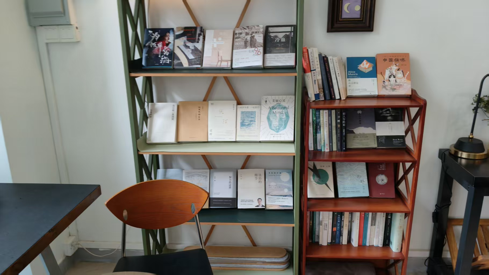

菜单也是如此。她并非专业设计师，只是用软件一点点试出喜欢的图案和布局，再把它们做成一张张手写的菜单。制作价格牌的时候，她想的并不是"怎样更像一个商业品牌"，而是怎样把一些细小但确实属于自己的感受放进去。
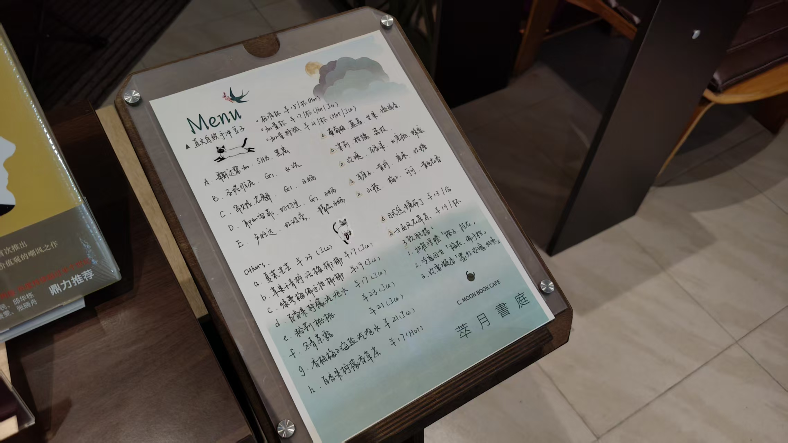
当客人说它看起来舒服、有温度时，她会觉得这些细节被接住了。
在一个越来越习惯标准化的时代，我们经常被要求把一切事情说清楚：目标是什么，结果是什么，投入能换来什么。可一间小书店未必需要立刻回答这些问题。它可以先存在，先成为一个人记忆里的地方，也成为另一些人短暂离开日常的位置。
阅读不是接收答案

小蓉小时候喜欢逛书店，也一直相信纸书带来的感受，和刷到一段讲书视频不一样。
读书博主可以提供很好的见解，但那仍然是别人替你完成了一次理解。真正拿起一本书，读到某一句话，然后在某个瞬间感到震动，是另一种经验。
它可能不够深，也不够完整，甚至只是一个很私人、很浅的感受。但那是你自己抵达的地方。
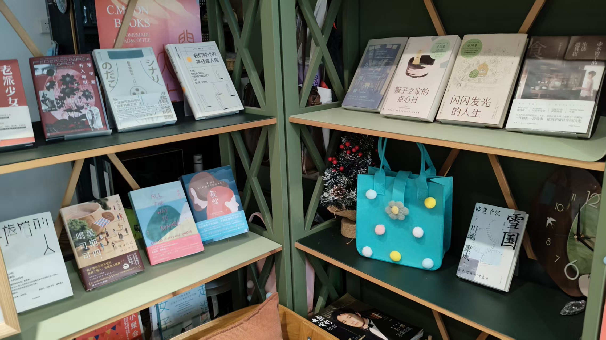
"我们现在不用考试了。"
她不认为每一本书都必须被完整读完、解释透彻，也不认为读书需要重新变成一种考试。看到哪里，有什么想法，和身边的人聊一聊，已经足够有意义。
这也是她经营书店的方式：不急着替别人规定应该读什么、怎么读。有人带着一本书来，谈起自己的理解；有人只在书架前停留一会儿；有人喝完一杯咖啡，和店主聊一段并不宏大的话题。书店提供的不是标准答案，而是让人重新产生感受和交流的条件。
把兴趣留在生活里
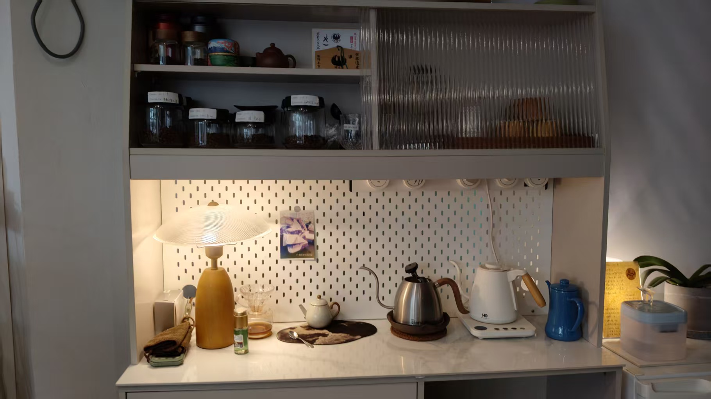
咖啡是小蓉另一条持续了很多年的兴趣。
她没有把自己训练成一个追求标准化的商业烘焙师。最开始，她用手网烘焙，后来甚至拿家里不用来炒菜的锅做咖啡豆。她会观察火候、风、豆子的变化，也会用手去感受锅的温度：太燥了，就把火调小；不温不火，就再往上加一点。
这套方法听起来并不"科学"，但它属于她。
工厂会为一只豆子设定味型，决定哪些味道应该被突出，哪些应该被舍弃。小蓉更想知道的是：今天这个豆子，它自己是什么样子？在今天的气温、湿度和状态里，它愿意呈现什么？
她把咖啡豆当成一个需要被认识的朋友，
而不是一件必须被控制的产品。
这并不意味着她拒绝专业或结果。她只是没有把兴趣一开始就交给商业目标。她不打算把咖啡做成线上品牌，只希望书店里有人需要提神时，能喝到一杯还不错的口粮咖啡。
兴趣因此没有变成另一个需要完成的项目。它留在生活里，慢慢生长，带她走到她自己也没有预料到的地方。
"十年前我喝咖啡，只是想喝而已。那时候也不知道它会把我带到今天。"
我们很容易把兴趣也变成一种绩效管理：几年内要达到什么水平，拥有多少成果，最好还能产生收入。但真正长久的兴趣，往往不是从计划开始的。它只是因为你在意，所以你愿意给它一点时间；因为你愿意给时间，它才有机会逐渐变深。
只有自己可以打断自己
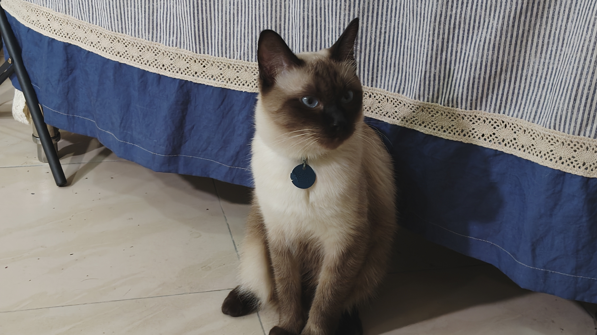
小蓉说，自己从小就是一个很在意感受的人。
小时候读书、想事情，家人当然会提醒她学习、提醒她专注。但很多时候，她的心仍然在另一个问题上。她可能在睡觉前想，洗澡时想，炒菜时想。那些兴趣并没有阻止她工作，只是一直在她的生活里占据着一块位置。
"只有你会打断你自己。"
这句话听起来任性，却也带着一种清醒。一个人是否应该继续想一件事，是否应该给一个兴趣机会，最终不能完全交给外部评价。别人可以认为它不实用、不赚钱、不值得，但你仍然需要知道，自己是否真的愿意放弃它。
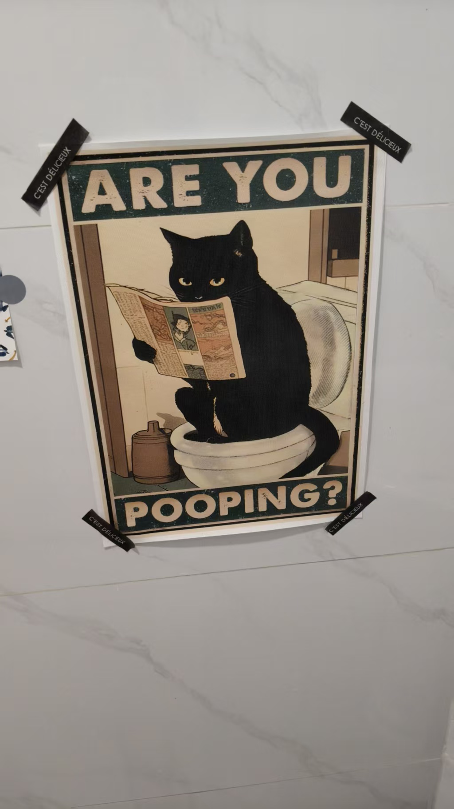
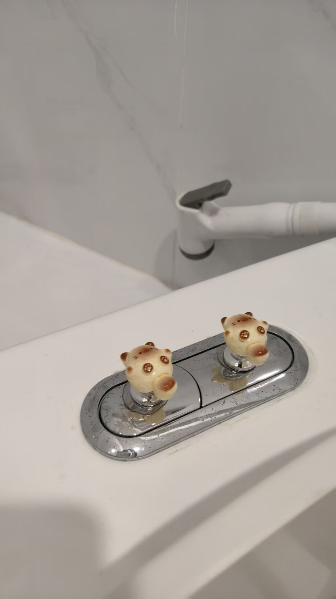
当然，尊重感受并不等于拒绝现实。书店依然需要维持，生活依然需要工作，身体也会疲惫。她处理焦虑的第一步，反而很朴素：最近是不是没睡好，饭有没有吃好，生活节奏是不是太乱。
很多时候，焦虑并不是因为发生了多么巨大的事情，而是因为人在同时想着十件事，却没有真正完成眼前的一件事。
当她去训练时，只需要处理当下这一组动作；当她炒咖啡时，只需要感受这一锅豆子的变化。事情没有减少，但注意力重新回到了身体和当下。
失败之后，重新判断
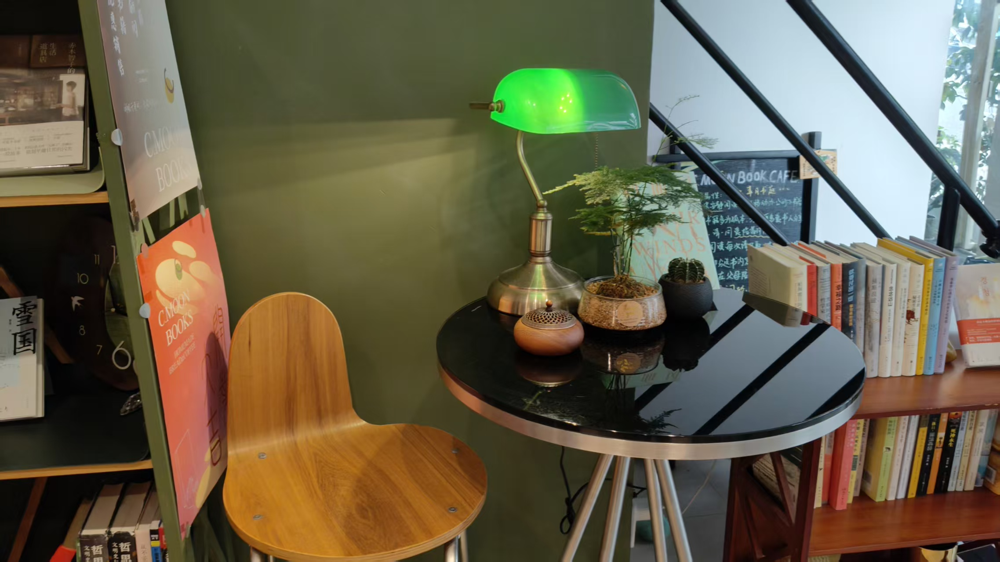
访谈里，小蓉谈到过一次没有继续下去的项目。
那时她太害怕失败，于是停了下来。后来回头看，她发现事情并不一定真的不行，更多时候，是自己在某个阶段承受不住了。
这不是一句轻飘飘的"坚持就会成功"。相反，它承认了人确实会害怕，会耗尽，会在某个时刻扛不下去。但当一个人能把那段经历重新放回自己的生命里，客观地看见哪里做得不错，哪里还需要调整，就不必再用一次失败把整个自己判定为无效。
她现在会允许自己重新评估：今天做到什么程度，哪些部分还可以再推进一点。比起一开始就做出正确选择，更重要的也许是，在走偏之后仍然有能力回到自己的判断上。
在拳击里，学习专注
最近，小蓉开始练拳击。
最初只是因为雨季太长，无法经常到户外运动。她没想到，拳击会比想象中更消耗体力，也更考验意志。训练不只是出拳，还包括步伐、跳跃、敏捷和持续不断的体能练习。一节课八十分钟，真正需要坚持的部分可能超过一个小时。
她曾经因为训练受伤，休息了半个月。重新回去时，她发现自己没有上一次那么容易受伤了。身体能承受的苦变多了，心理能承受的事情似乎也跟着变多了。
拳击真正有意思的地方，不只是力量，而是它需要判断。什么时候进攻，什么时候防守，怎样在对抗里找到自己的策略，像一场发生在身体里的棋局。
第一次进行轻实战时，她甚至不知道该怎么动。面对突然靠近的攻击，大脑先被恐惧占满，身体反而停在那里。练了几轮之后，她先学会了跑，再慢慢学会阻挡，学会让身体在危险到来时作出反应。
许多能力不是"知道"就够了。
它们需要在具体的处境里被身体练出来。
她对焦虑的理解，也在训练中变得更具体：当你一边做这件事，一边惦记着另外九件事，你会觉得自己同时拥有十个问题；但如果只处理眼前这一件，世界就暂时只剩下一件事。
这可能就是拳击带给她的"小憩"——不是停止行动，而是让注意力从混乱中撤回来，重新放在此刻。
小憩不是逃离
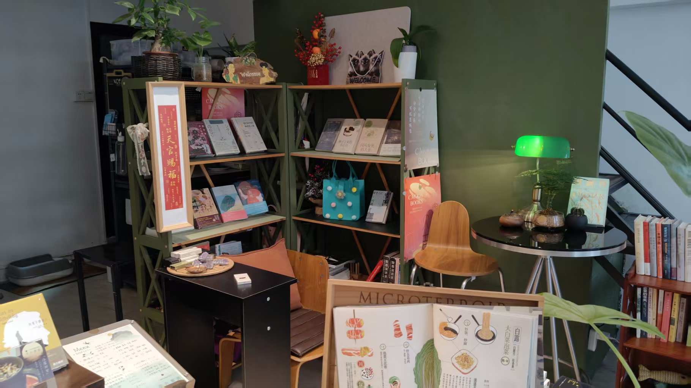
我们常常把"停下来"理解成休息，理解成暂时不工作、不承担、不面对。但小蓉的书店、咖啡和拳击提醒我们，停下来也可以是一种主动的训练。
它让人重新听见自己的感受，保留一部分不急着变现的兴趣，允许一个念头在心里多停留一会儿；也让人在失败、焦虑和不确定中，重新判断什么值得继续，什么需要放下。
书店没有把她从现实里带走。咖啡没有成为一条新的商业赛道。拳击也不是为了让她变成一个更具攻击性的人。
它们只是帮助她在高速旋转的生活里，保留一个仍然属于自己的位置。
当一个人能够在当下专注地做一件事，能够不因为暂时没有结果就否定自己的兴趣，能够在受伤之后重新回到训练场，也许他已经在积蓄一种不容易被看见的力量。
小憩，或许正是这样一种力量：
不是离开世界，
而是在世界不断加速的时候，
仍然知道自己为什么出发，
正在往哪里走。
—— 小憩 · 把时间还给自己 ——
萃月书庭 · C.MOON BOOK CAFE
EP01 · 萃月书庭——小的秩序

周简
时间管理教练 / 前咨询顾问 / 慢生活实践者
周简把现代人的困境总结为一句话：「技术在迭代，信息在过载，而人却在日复一日的系统空转中被工具化。」
她提出「时间主权」的概念——不是管理时间，而是重新声明对时间的所有权。每天留出一段不被任何通知、会议、deadline 侵占的时间，这段时间里，你可以什么都不做。
我们尝试发起一场关于「时间主权」的回归运动。从高速旋转的社会齿轮中抽离，积聚起穿透迷雾的力量。
未来的竞争力，属于那些懂得何时停下来的人。不是停下来认输，而是停下来确认方向。
EP02 · 加速时代的时间主权

林深
AI伦理研究者 / 高校哲学系讲师
林深在课上问学生：「你们有多少决定，是自己做的？」大部分人沉默了。推荐算法决定了看什么、买什么、甚至喜欢谁。
她认为，AI时代人的核心议题不是「如何使用AI」，而是「在AI替我们思考之前，我们是否还保有自己的判断力」。
当算法比你更懂你，「自我」还剩下多少是自己的？AI重塑世界的今天，人如何重新安放自己的判断力。
我们关心的，是在普遍焦虑的今天，人如何重建内在秩序。判断力不是天生的，它需要在安静中被反复练习。
EP03 · AI时代，判断力如何安放